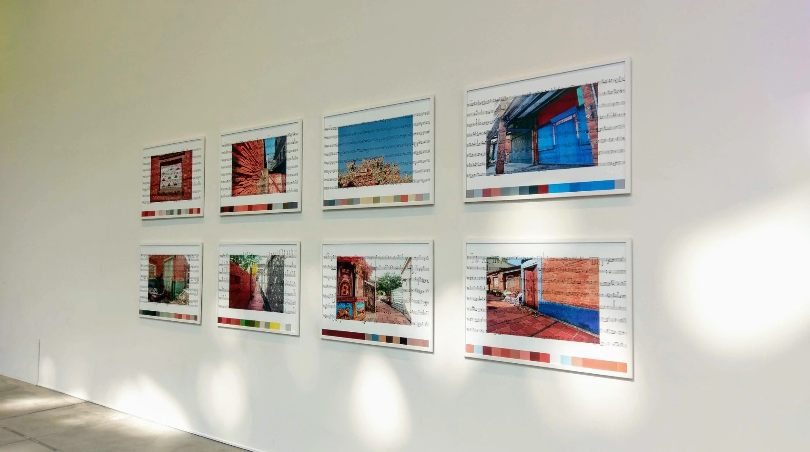
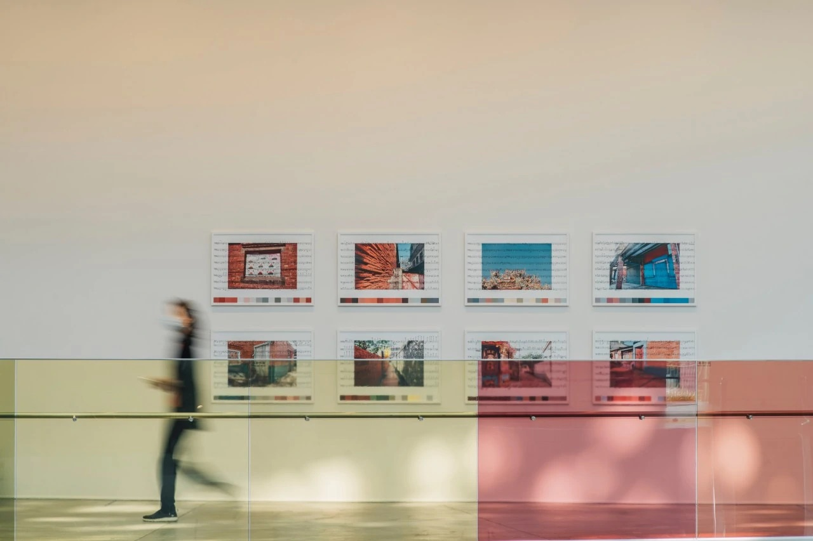
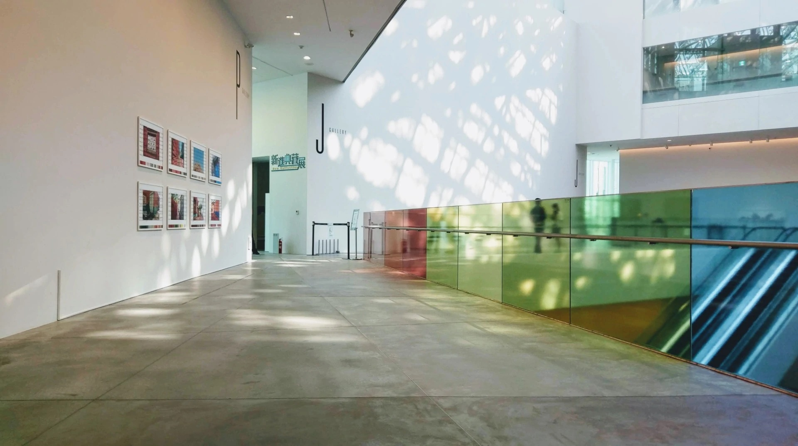
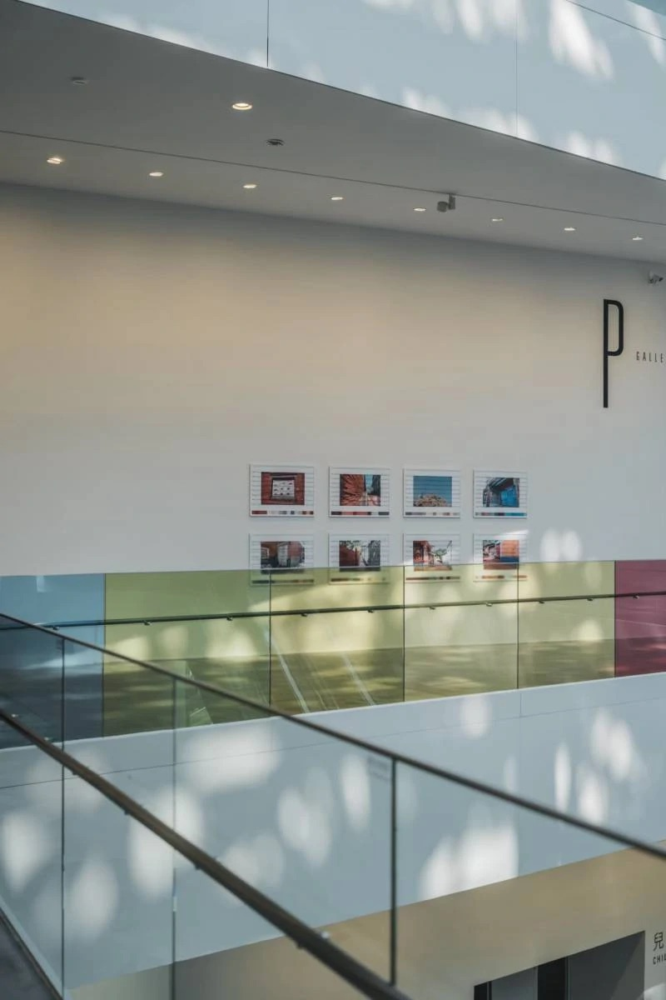
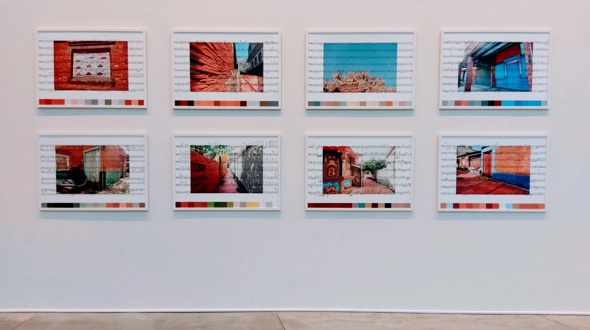
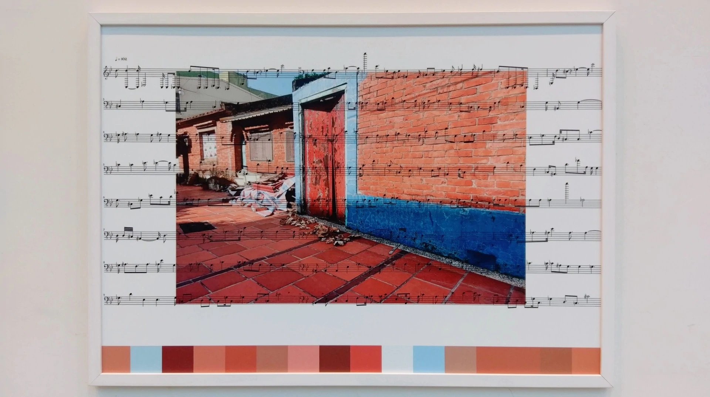

×
Digital Print, Videos, Booklets • 2021






Surrounding Spectrum — Yanshui Township extends the artist’s long-term inquiry into landscape, perception, and sound. Working on site in Yanshui, the artist recorded local imagery and environmental sound, then translated the captured color information into structured digital audio through a custom program based on color theory and acoustics. The resulting AI-generated music is delicate, clear, and playfully unexpected; when viewers read the color models, they encounter a distinct melody embedded within the landscape.
Since 2018, the artist has focused on declining old business districts, military villages, and small towns marked by social change, using local images and sounds to re-read place value and historical memory. In this project, the investigation expands to Yanshui, one of the historical towns named in the sequence of 'one prefecture, two Lujhu, three Bangka, four Yuejin,' tracing the atmosphere of a town that has moved through prosperity and renewal.
The installation was presented in the corridor-like space outside the exhibition rooms at Tainan Art Museum, echoing the bodily experience of moving through Yanshui’s old streets. Image spectrums, translucent color swatches, a Yuejin Harbor sound installation, and an interactive music-image program were arranged throughout the site. By incorporating interviews with returning youth and sound-image recordings from Yanshui’s alleyways, the work seeks to simulate the inner rhythm of return and to open a broader imaginative field through the integration of scientific analysis and artistic thought.